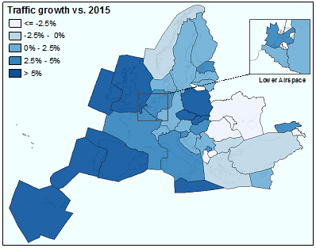

At system level, traffic increased by 2.4% in 2016 which corresponds to an additional 681 flights per day on average.
Change by flight type
Change by traffic segment
The main driver of the observed traffic growth in 2016 was the growth in the intra-European low cost traffic segment.
Traffic growth by geography

Traffic variation by Air Navigation Service Provider (ANSP)
Peak traffic load continued to rise at a higher rate than average traffic in 2016. September 9th 2016 was the peak day in 2016 with 34,024 flights. It was also the 2nd highest on record (27 June 2008). Although annual traffic was still slightly below 2008 levels, the third quarter in 2016 was the highest on record.
The highest growth compared to 2015 was observed in Portugal (+10.5%), Ireland (7.5%), Spain (+7.5%) and Poland (+7.3%). The most notable traffic decreases in 2016 were in Ukraine (-9.0%), Moldova (-8.3%), Armenia (-7.8%), Albania (-7.8%).